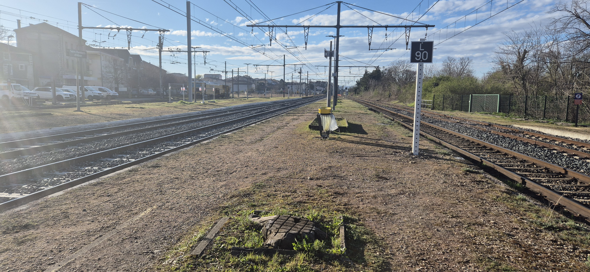

Timeline
Le début
Vers 2018, j'ai commencé à toucher à Roblox Studio pour faire mes propres jeux. J'ai tenté de recoder la physique de Sonic en Lua — c'était approximatif, mais c'est là que j'ai chopé le virus. J'ai enchaîné avec Blender et Unity pour aller plus loin.
Mon frère faisait du web à l'époque, ça m'a donné envie de tester HTML et CSS. Et j'ai accroché.

2018-19
La STMG et le BTS SIO
Direction la STMG après le confinement — pas le chemin le plus évident, mais l'option SIG en terminale m'a remis sur les rails. Je retrouve le code et je me rappelle pourquoi j'aimais ça.
BTS SIO option SLAM depuis 2023. Beaucoup de langages différents, des projets qui m'ont appris autant que les cours. Deux stages : Orange Caraïbes côté réseau/dev, et Elixir Création où j'ai fait du web à temps plein.
2020-25
Gamagora — et la suite
J'ai intégré la licence professionnelle Gamagora à l'IUT Lyon 2, formation dédiée au jeu vidéo. Cette année, on a développé TomoTomo en équipe — un jeu de plateforme 3D dans un Japon années 2000, avec un robot sans mémoire au cœur d'une ville sous surveillance. Du concept jusqu'à la sortie, une expérience de développement complète.
▸ Voir TomoTomoLa prochaine étape, c'est le master informatique de l'IUT Lyon 2. Même établissement, même environnement, une spécialisation plus poussée.